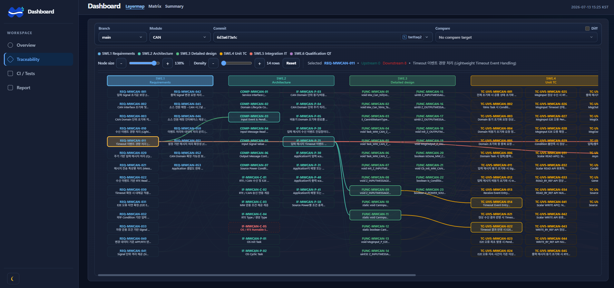
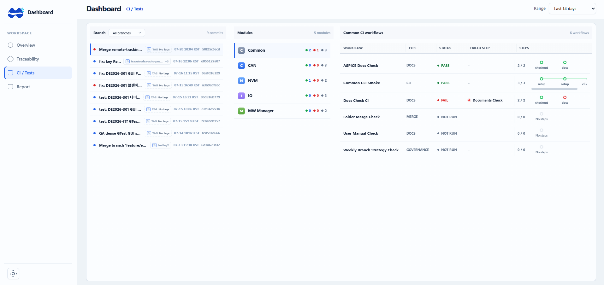

ASPICE 문서 단계의 추적성부터 Git 브랜치·커밋·태그, CI 실행 결과와 coverage 추이까지 연결해 프로젝트 상태를 한 화면에서 확인하도록 구성했습니다.
MOBASE ASEC · CI / Test Report
프로젝트 관리 대시보드
개요
해결할 문제
요구사항·설계·테스트 문서, Git 변경 이력, CI 결과가 서로 다른 도구에 흩어지면 변경 영향과 실패 위치를 이어서 확인하기 어렵습니다. 선택한 커밋을 기준으로 추적성과 검증 결과를 함께 보는 화면이 필요했습니다.
구현 과정
문서 추적성, Git 변경 이력, CI 결과를 선택한 브랜치와 커밋 기준으로 이어서 탐색하도록 구성했습니다.
- Git 브랜치·모듈·커밋을 선택하고 태그 추가·삭제를 포함한 변경 기준을 관리합니다.
- ASPICE SWE.1~SWE.6 문서와 요구사항·아키텍처·상세설계·테스트 산출물의 연결 관계를 추적합니다.
- 모듈별 CI 워크플로의 pass·fail·미실행 상태와 실패 단계를 확인합니다.
- GTest·GUI 결과, 개별 테스트 목록, line·function coverage 추이를 함께 비교합니다.
화면·동작

